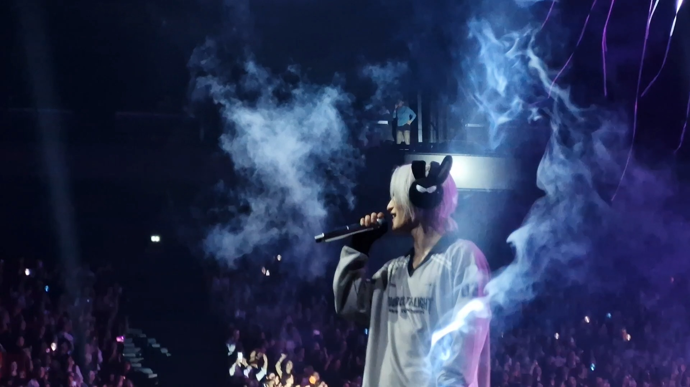

Jeux Vidéos
Les jeux vidéos, et plus spécifiquement les jeux d'aventure m'ont toujours fasciné.
Ils offrent l'opportunité de s'évader dans des mondes inconnus, où chaque quête peut être une épopée.
Explorer des lieux mytérieux, résoudre des énigmes ou encore parcourir des donjons est captivant.
Ces jeux permettent une véritable évasion où tout est possible.

Lecture
Tout comme les jeux vidéos, les romans offrent également de nombreuses possibilités d'évasions.
J'apprécie tout particulièrement les romans de fantasy, où l'on peut retrouver de la magie. En effet,
ces mondes magiques, bien souvent peuplés d'être en tout genre, permettent d'imaginer une infinité
de possibilité.
Musique
Ecouter de la musique a toujours été pour moi une source de plaisir et d'évasion.
Elle me permet de pouvoir me déconnecter des différentes sources de distractions extérieurs
comme le bruit des conversations ou encore la polution sonore en ville. Cette passion qui a commencer
par un simple écoute sur les plateformes de streaming s'est transformé, et à présent je collectionne
également des albums et je vais à des concerts d'artistes ou de groupe qui me plaisent.
